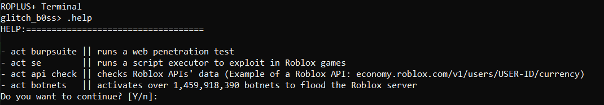

Roplus(Ro+) is a ROBLOX exploitation tool that can be used in games and on
the roblox.com website. This tool comes with default tools such as BurpSuite, a terminal, a script executor
and more powerful hacks and exploits.
Screenshot of the terminal

You can navigate to the download page by clicking here